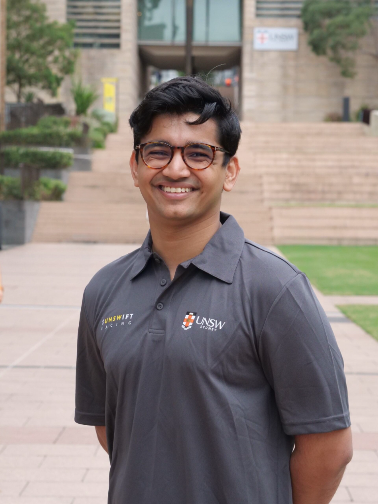

software systems are where engineering, research, and real-world impact meet.
a manufacturing engineer focused on software systems, with published research, now making his way into banking.
technical interests: systems engineering, software systems integration, and security engineering.
this graph maps the people, organisations, and roles that have shaped my work. each node represents an entity, while each line shows a relationship between them. the colours distinguish banking, manufacturing, academia experience, and research, and the lighter shades indicate deeper levels in the structure. drag any node to explore the connections and rearrange the graph.